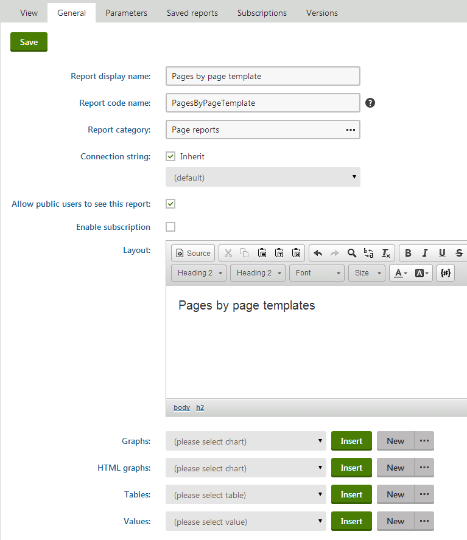
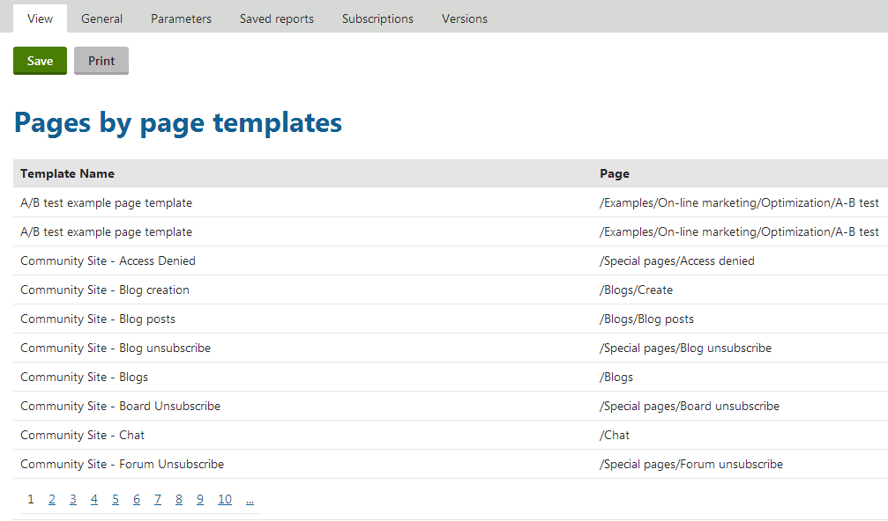
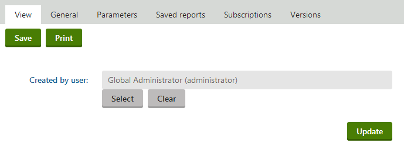

Example - creating a simple report
This example demonstrates how to create a report that displays a table, graph and value, and uses a reporting parameter:
Creating a report category
Open the Reporting application.
Select the root of the reporting tree (the All reports category by default).
Click ... next to the New report button and select New category.
Type User reports as the Category display name.
You can leave the code name as (automatic).
Click Save.
Creating a new report
In the Reporting application, click New report.
Type Pages by page template as the Report display name.
Click Save.
Now you can edit the layout of the report and insert tables, graphs and values.
The General tab of the report editing interface opens.
Type Pages by page template into the Layout text area.
Select the text and use the editor to set the Format to Heading 1.

Adding the heading into the report's layoutClick Save.
Creating a new table
On the report's General tab, click New in the Tables section below the layout editor.
Enter the following values:
Display name: Pages by Page Template
Query:
SELECTPageTemplateDisplayNameAS[TemplateName], DocumentNamePathAS[Page]FROMView_CMS_Tree_JoinedLEFTJOINCMS_PageTemplateONCMS_PageTemplate.PageTemplateID = View_CMS_Tree_Joined.DocumentPageTemplateIDWHEREPageTemplateDisplayNameISNOTNULLANDPageTemplateIsReusable = 1ORDERBYPageTemplateDisplayNameIs stored procedure: no
SkinID: ReportGridAnalytics
Enable paging: yes (checked)
Page size: 10
Page mode: Page numbers
Click Save & Close.
Place the cursor in the layout editor on a new line under the heading.
Select the table from the list in the Tables section.
Click Insert.
The system adds a string like %%control:ReportTable?PagesByPageTemplate.PagesByPageTemplate%% into the text area.
Click Save.
Switch to the View tab to see the report table.

Viewing the new report table
Creating a new graph
Switch back to the report's General tab.
Click New in the Graphs section below the layout editor.
Enter the following values:
Display name: Favorite Page Templates
Query:
SELECTTOP5 PageTemplateDisplayNameAS[TemplateName],COUNT(PageTemplateDisplayName)AS[Usage]FROMView_CMS_Tree_JoinedLEFTJOINCMS_PageTemplateONCMS_PageTemplate.PageTemplateID = View_CMS_Tree_Joined.DocumentPageTemplateIDWHEREPageTemplateDisplayNameISNOTNULLANDPageTemplateIsReusable = 1GROUPBYPageTemplateDisplayNameORDERBYCOUNT(PageTemplateDisplayName)DESCGraph type: Pie chart
Drawing style: Pie
Title: Favorite page templates
Series -> Display item value: Disabled (not checked)
Click Save & Close.
Place the cursor in the layout editor on a new line under the table.
Select the graph from the list in the Graphs section.
Click Insert.
The system adds a string like %%control:ReportGraph?PagesByPageTemplate.MostFavoritePageTemplates%% into the text area.
Click Save to save the changes.
If you now switch to the View tab, you can see the report graph.

Viewing the new report graph
Creating new values
Switch back to the report's General tab.
Click New in the Values section below the layout editor.
Enter the following values:
Display name: Number of pages with page template
Query:
SELECTCOUNT(DocumentID)FROMView_CMS_Tree_JoinedWHEREDocumentPageTemplateIDISNOTNULLIs stored procedure: no
Formatting string: Pages with template: {0}
Click Save & Close.
Place the cursor in the layout editor under the graph.
Select the new value from the list in the Values section.
Click Insert.
The system adds a string like %%control:ReportValue?PagesByPageTemplate.NumberOfPagesWithPageTemplate%% into the text area.
Click Save.
If you switch to the View tab, you can see the text of the value.
Defining report parameters
Switch to the Parameters tab.
Click New field and enter the following values:
Field name: UserID
Data type: Integer number
Default value: 53
Field caption: Created by user
Form control: User selector
Click Save.
Now you need to add the parameter to your queries. For the purposes of this example, modify only the table query.
Switch to the General tab.
Select Pages by page template in the Table list.
Click ... next to the New button and select Edit.
Modify the table SQL query like this:
SELECTPageTemplateDisplayNameAS[TemplateName], DocumentNamePathAS[Page]FROMView_CMS_Tree_JoinedLEFTJOINCMS_PageTemplateONCMS_PageTemplate.PageTemplateID = View_CMS_Tree_Joined.DocumentPageTemplateIDWHEREPageTemplateDisplayNameISNOTNULLANDDocumentCreatedByUserID = @UserIDORDERBYPageTemplateDisplayNameThis adds the parameter to the WHERE condition of the query. All parameters that you define can be used in the query using the @<ParameterFieldName> expression.
Click Save & Close.
Now switch to the View tab. You can see that the report has a filter:

Viewing the filter that allows you to set value of the report's parameter
The table now only displays template names of pages that were created by the user specified in the filter.